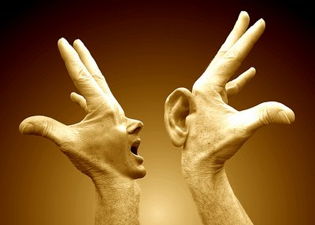
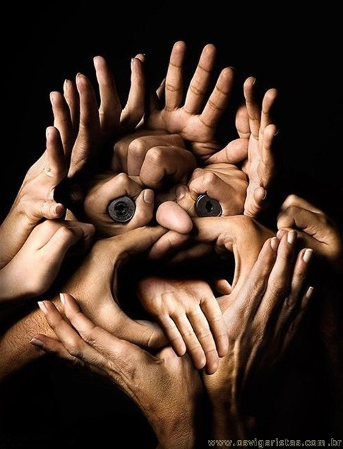

<!DOCTYPE htm1>

<htm1 lang="pt-br">

  <head>

    <meta charset="utf-8"/>
    <link rel="stylesheet" href="_css/stylo.css">

  </head>


  <body>

  <div id="interface">
  <hgroup>

  <h1 id=titulo> A língua de sinais e sua importância para a inclusão social </h1>
  <h2> <m>Jose<m/> Renato</h2>
  </hgroup>
  <figure class="foto-descricao">
  

<h1> Instituto nacional de educação dos surdos <a href="http://www.ines.gov.br/" target="_blank">INES</a></h1>


<nav id="menu">
   <h1>Menu pricipal</h1>
   <ul type="circle">
     <li> <a href="http://www.handtalk.me/app" target="_blank">Hand Talk</a> </li>
     <li><a href="http://www.surdosonline.com.br/letra.jsp?letra=M" target="_blank"> Dicionario </a></li>
     <li><a href="https://www.legisweb.com.br/legislacao/?id=304815" tanget="_blank"> Legislação Detran <a/></li>
    <li><a href="https://tecnoblog.net/186761/telegram-bot-cemig/" tanget="_blank">Reclamação Cemig <a/></li>

   </ul>
</nav>

</figure>

<br>A língua de sinais e sua importância para a inclusão social</br>
<p style="text-align: justify; text-indent: 50px"> Criada para promover a inclusão social de deficientes auditivos, a <b>LIBRAS</b> – Língua Brasileira de Sinais – é uma forma de linguagem natural. Como qualquer outra, ela apresenta uma estrutura gramatical própria, com seus aspectos semânticos, sintáticos, morfológicos, etc. O que a diferencia das demais línguas usadas hoje é que, em vez do som, utiliza os gestos como meio de comunicação. Nela, os sinais são marcados por movimentos específicos realizados com as mãos e combinados com expressões faciais e corporais. <p/>
<p style="text-align: justify; text-indent: 50px"> Após ser reconhecida oficialmente como uma das línguas oficiais do país, uma lei do ano de 2005 determinou que as universidades que oferecem cursos de formação de professores e de Fonologia devem ter a disciplina de ensino de LIBRAS em suas grades curriculares. Essa medida representou um grande avanço para   a valorização da língua de sinais e para a capacitação dos futuros profissionais. Desse modo, os estudantes poderão conhecer um pouco sobre a vivência e as necessidades dos surdos e, com seu trabalho, contribuir para a inclusão deles na sociedade.<p/>
<p style="text-align: justify; text-indent: 50px">Por isso, ter conhecimento em LIBRAS é um grande diferencial atualmente. Assim, como ainda existem poucos profissionais qualificados, são muitas as oportunidades para aqueles que sabem utilizar esse meio de comunicação.<p/>
 

<h2 id=titulo>Tradutor de Sites para Libras</h2>
<p style="text-align: justify; text-indent: 50px">É uma ferramenta de tradução automática de websites em português (Brasil) para a Libras, a Língua Brasileira de Sinais, utilizada no Brasil pela comunidade surda. Ao clicar no botão de acessibilidade, localizado na lateral do site, surge a janela com o Hugo, intérprete virtual da Hand Talk. Logo após, é só clicar em qualquer conteúdo de texto que o Hugo interpreta em Libras, automaticamente!</p>

<figcaption>
                                    Figura.Hand Talk

  </figcaption>
 </body>
 </div>
 </htm1>
